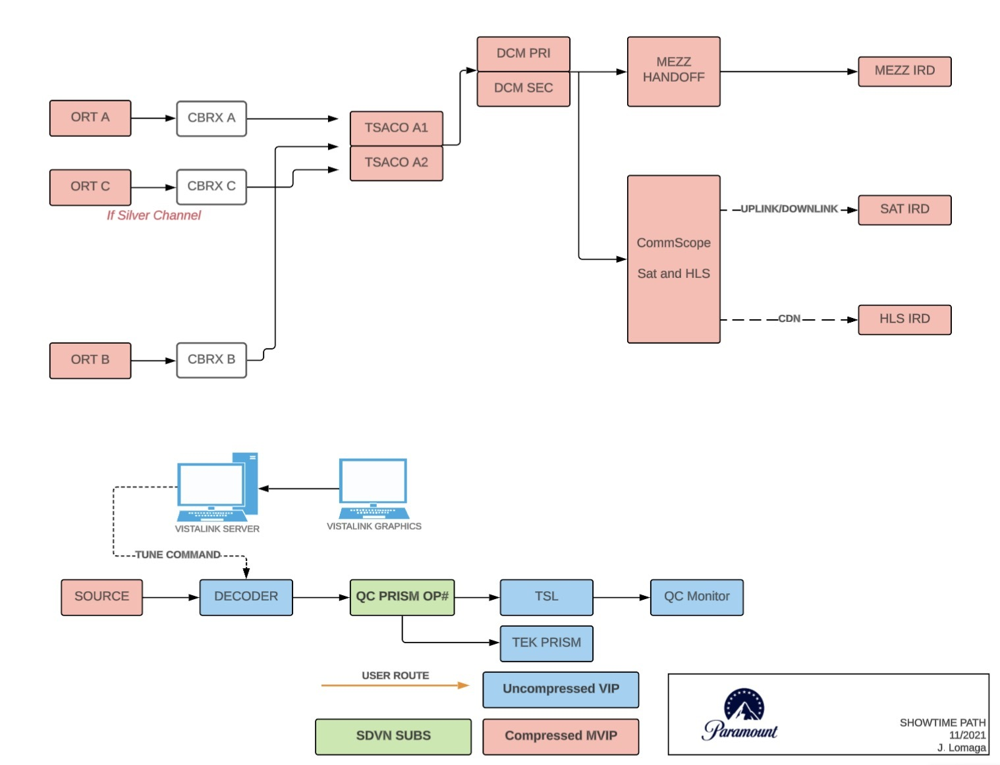
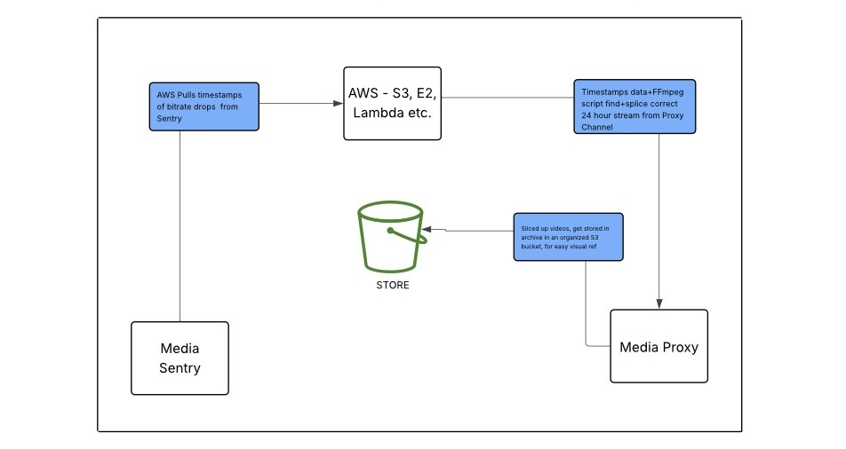
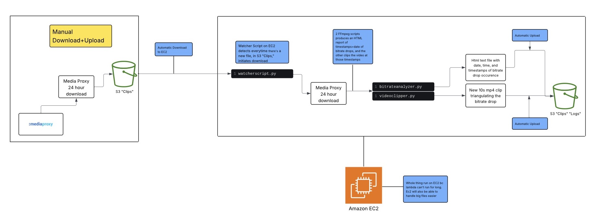

The operations team worked toward ensuring the seamless transmission of broadcast channels from CBS, MTV, and Showtime, to Comedy Central, Nickelodeon, and Pluto TV. This quality delivery requires validating each channel’s audio and video streams, including alternate language tracks, to confirm that all broadcast paths are fully functional and meet quality standards.

I used Airtable to optimize established workflows for channel validations.
Original Workflow: Our work involved doing channel validation for over 50+ cable channels using an excel file and clicking through every video feed in the signal path from source to destination. By the end of the day we had a record of the table but it went into a pile of other excel's in sharepoint and issues were not brought to light in a pertinent way.
Optimized Solution:
Implemented 2 automations
1. Slack Integration - with the click of a button, a slack message containing the errors only (following the operation's team "monitoring by exception" work style) was sent out into a designated slack channel made for this. This message documented the Channel, flagged that there was an error and the additional notes if necessary.
2. Google Docs integration - with another click of a button a report of all the errors after a day of performing channel validations.
**Attemped some Zapier but figured Airtable could take care of what I was attempting to accomplish here.
This has primed my mind to constantly ideate on solutions and optimizations in operational environments, and has encouraged me to critically evaluate and question established workflows to strive for greater efficiency.
Objective: Use AWS services to streamline the process of matching up bitrate drop timestamps in the program MediaSentry with the streams in MediaProxy.
LINKS: Project Proposal, Diagram Documentation , Video Demo
Origin Story (How this came about): This was a project I proposed and worked on completely by myself on the side. I noticed that our process of finding bitrate drops in content using the MediaSentry program, taking the timestamp where it occured, then finding that in the MediaProxy program was cumbersome. Fueled by a day in the office where I spent 2 hours parsing through 20 channels going back and forth like this, lining up multiple drops to the video clip and logging it, I figured there had be a more optimal way to go about this. This is when the AWS - Ambitious-MediaSentry-MediaProxy-Automation project was born.
Original Workflow: Our process involved going back and forth manually between the two programs MediaSentry and MediaProxy and having to log the times of the bitrate drops, then scroll through the channels in MediaProxy Seeing the video streams helped to validate whether the bitrate drop was truly pixelation or something concerning in that realm, or just a false alarm. The back and forth just takes a while.
Optimized Solution:
Started out with an Ideal solution, then ran into some barriers and improvised:
1. Optimal Solution - With the use of API's and a Lambda script, MediaProxy would automatically upload 24 hour streams at the same time everyday into a folder in an S3 bucket labeled "24 hour upload" AWS would also have access to MediaSentry's API and extract the bitrate data (timestamps of the drops) and compile it into a text file which would drop into another folder within the S3 bucket called "logs"
A lambda script would take the data and match it up it the 24 hour streams that would be in the S3 bucket, through further scripting, the clips would get spliced in 10 second bits, around where the drop happened and drop themselves into
a folder within S3 called "clips"
2. Improvised Version I did not have access to API's so I tried every workaround possible. I ended up with a version where 24 hour streams would have to be manually downloaded (see below). Those 24 hour downloads would be manually uploaded into the S3 bucket. Then I launched an EC2 instance, SSH'd into it and ran python scripts.
I wrote a watcherscript.py in python to track whenever there was a new 24 hour upload in the S3 bucket, to trigger the rest of the process.
From there I had two additional FFmpeg scripts: bitrateanalyzer.py and videoclipper.py both of which were written in the Nano terminal based text editor within the EC2 instance. They were able to automatically run and generate a log and 10 second clip, and automatically upload into the appropriate S3 buckets.


Reality: I realized that 24 hour streams were not possible without API's either, additionally there was a VPN constraint because these programs could only be accessed from work laptops. This is still largely a work in progress but I proposed it to my manager as well as the Integrations team here and got exprience presenting new ideas to higher ups which was important. The idea was well recieved and it is being stashed for future use, when the technology necessary becomes available.